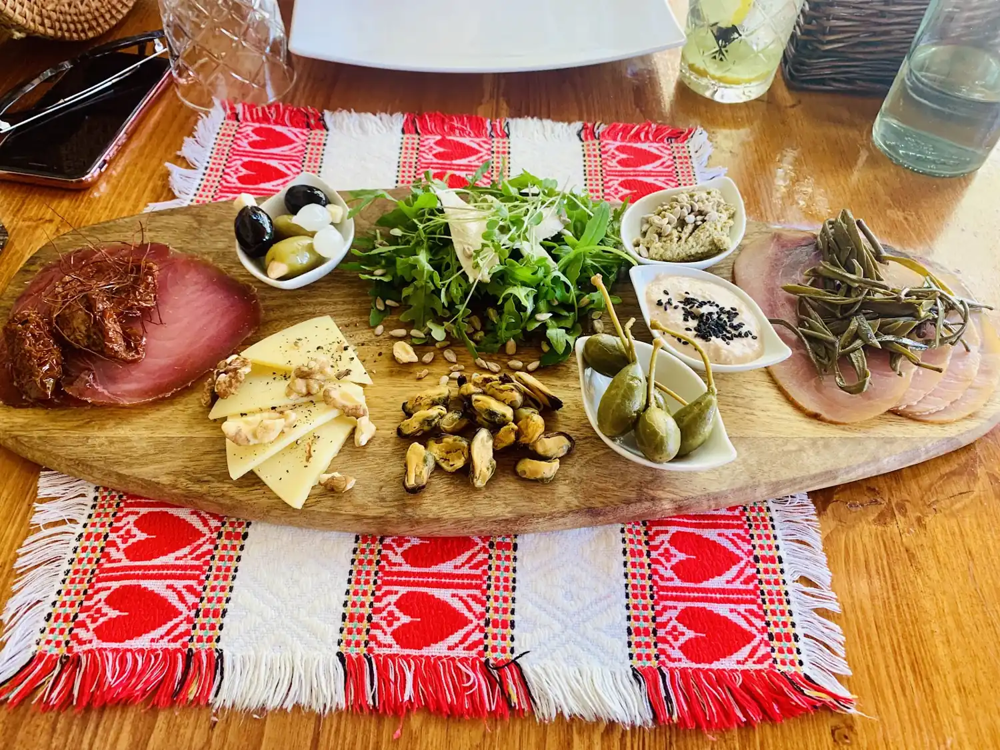
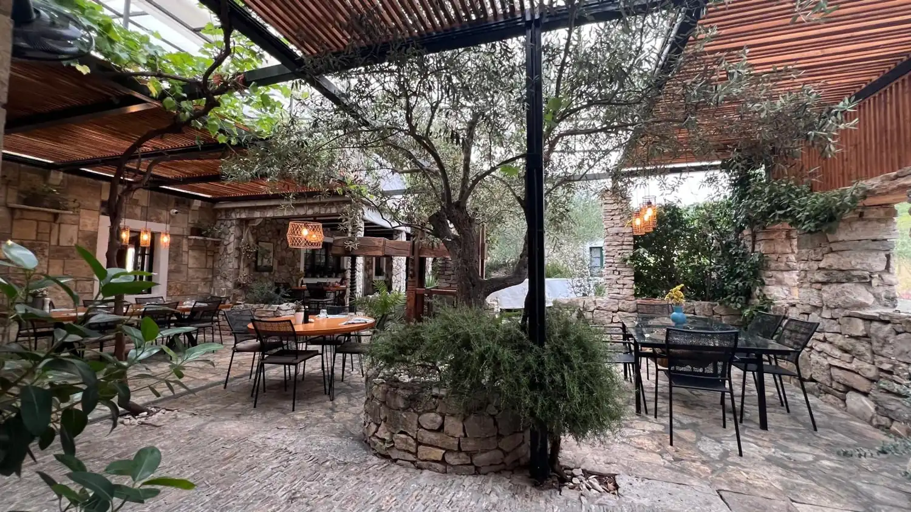
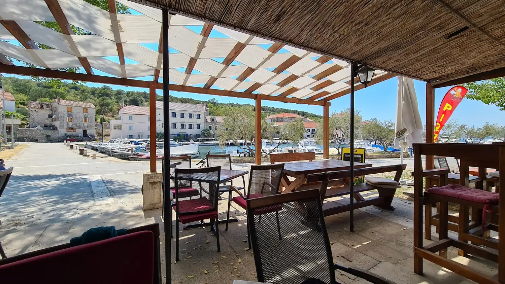
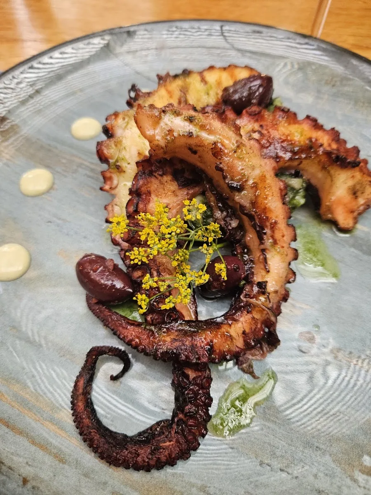
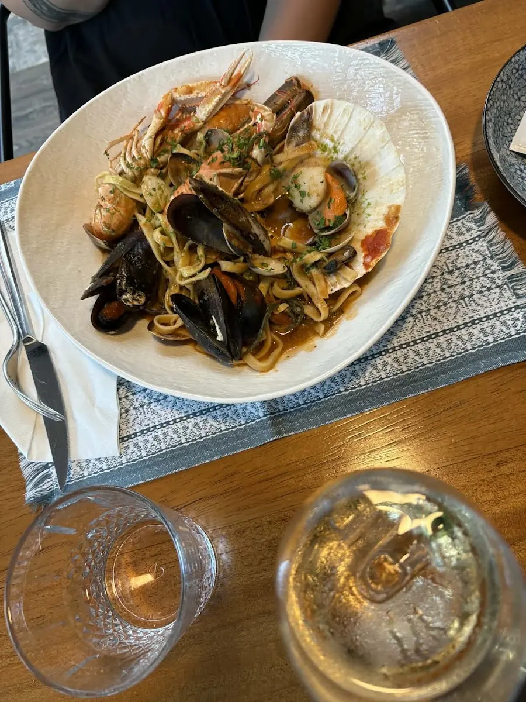
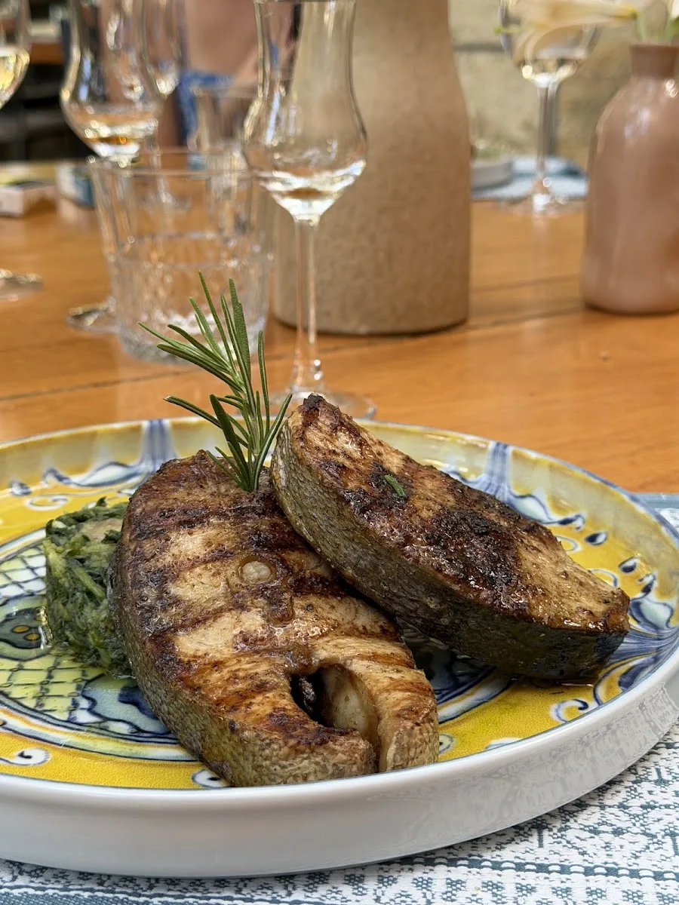
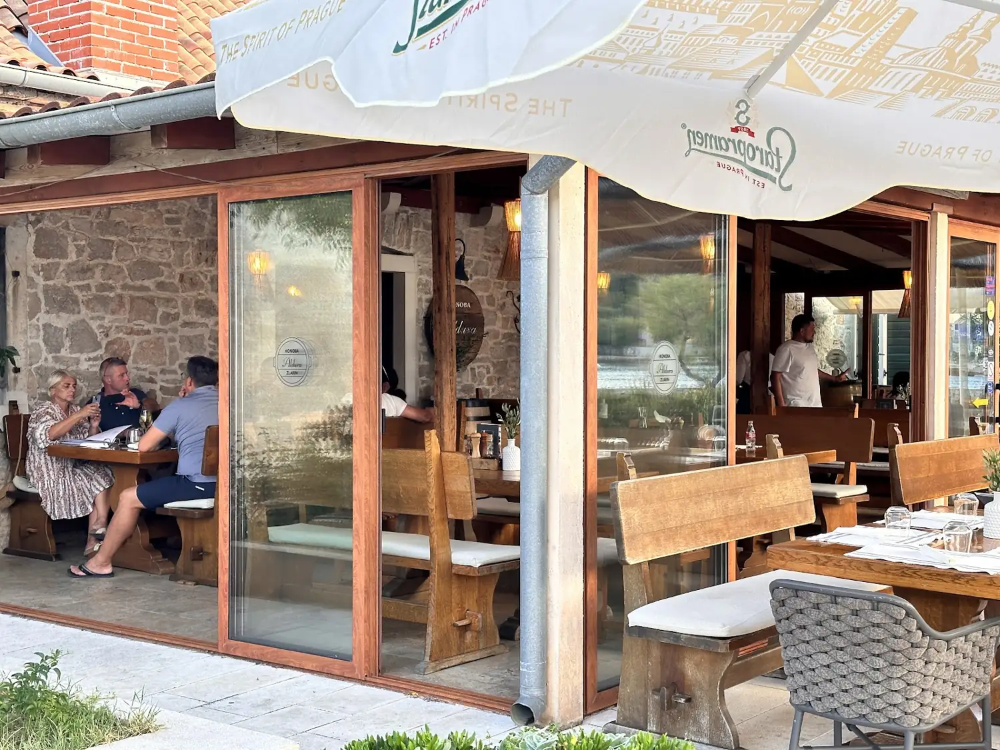
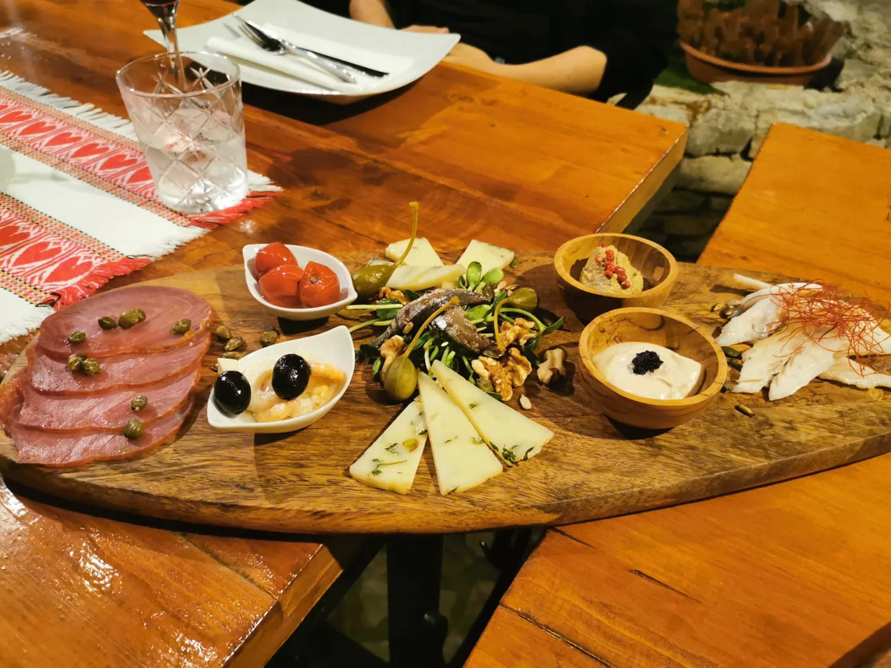

Obiteljska konoba · Otok Zlarin · Dalmacija
Na otoku bez automobila, za stolom obitelji Makale — s povrćem iz vlastitog vrta, ribom iz mora i mirom koji se ne može požuriti.
Naša priča
Prije desetak godina Antonio Makale s obitelji započeo je svoju gastronomsku priču ovdje, na Zlarinu — otoku do kojeg se dolazi brodom, na kojem nema automobila i gdje dan teče onako kako je oduvijek tekao.
Ono što je počelo kao obiteljski stol pod maslinom danas je jedna od vodećih konoba šibenskog kraja. Nismo žurili. Pustili smo da nas vode sezone, vrt iza kuće i ono što more donese tog jutra.
Kod nas gosti ne sjede u restoranu — sjede u našem vrtu, kao da su došli k rodbini.
Konobu ćete naći oko 200 metara od luke; slijedite oznake od crkve, kroz uske kamene uličice, dok ne ugledate krošnju masline.


Stoljetna maslina i kamen
U središtu naše terase raste stoljetna maslina. Njezina krošnja je naš krov, njezin hlad naša ljetna sala. Pod njom su drveni stolovi, okolo stari kameni zidovi koje su slagale ruke prije nas, a između — mediteransko zelenilo koje miriše na lovor, ružmarin i sol.
Navečer se upale svijeće, more se smiri, a kamen oko nas još drži toplinu dana. To je atmosfera koju ne možemo opisati u jelovniku — morate sjesti za stol da je osjetite.
Iz vlastitog vrta
Većina onoga što stavimo pred vas raslo je nekoliko koraka dalje. Naš vrt nije ukras — on je kuhinja prije kuhinje.
Rajčica, tikvice, blitva i začinsko bilje beru se ujutro za ručak istog dana. Bez hladnjača, bez kilometara — samo zrelost otoka.
Svježa riba i plodovi mora dolaze iz okolnih voda; meso i sir od lokalnih ljudi koje poznajemo po imenu. Kupujemo ono što je dobro tog dana.
Maslinovo ulje, domaće vino i deserti pripremljeni u kući. Dalmatinska tradicija, dotjerana začinima i pažljivom prezentacijom.
Atmosfera
Brod, pa tišina, pa svijeća pod maslinom.
Zlarin · otok bez automobila
Galerija
Topli, otočni tonovi — onako kako konoba izgleda u zlatni sat.





